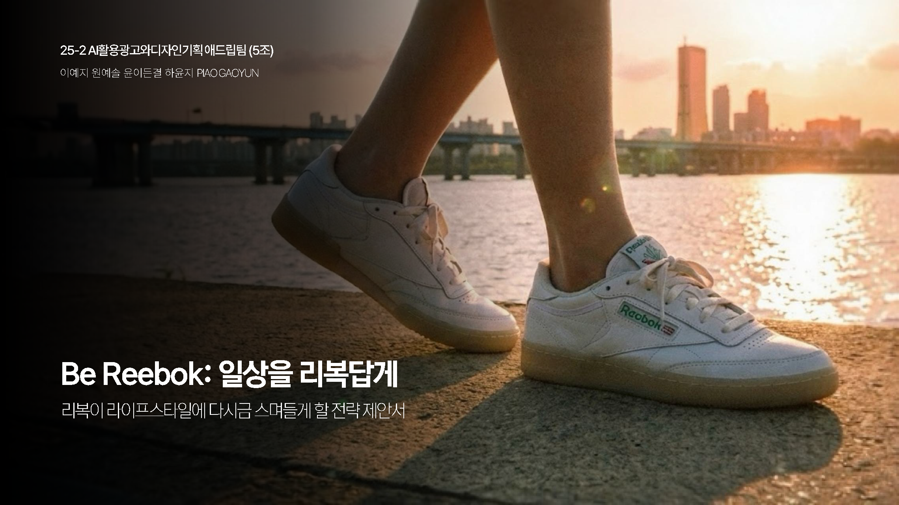

Blue Elephant
Blue Elephant의 브랜드 경험을 확장하기 위한 IMC 프로젝트입니다. 온라인 참여를 오프라인 리테일 방문으로 연결하고, 소비자가 직접 브랜드를 체험하고 공유할 수 있는 참여형 캠페인 구조를 제안했습니다.
Problem
제품 경쟁력은 존재하지만, 소비자가 브랜드를 직접 경험하고 기억할 수 있는 참여형 접점이 부족하다고 분석했습니다.
Strategy
Blue Frame Lab을 중심으로 오픈콜, 오프라인 전시, 커스텀 스튜디오를 연결해 브랜드 참여 흐름을 설계했습니다.
Touchpoint
매장 방문, QR 콘텐츠, UGC 공유, 커스텀 제품 경험을 통해 온라인 관심이 실제 브랜드 경험으로 이어지도록 구성했습니다.

Reebok
“Be Reebok – 일상을 리복답게”는 Reebok의 브랜드 이미지를 재해석한 광고 디자인 프로젝트입니다. 제품 중심의 홍보를 넘어, 브랜드가 일상 속에서 어떤 태도와 분위기로 경험될 수 있는지에 집중했습니다.
Problem
Reebok은 헤리티지를 가지고 있지만, 젊은 소비자에게는 현재적이고 감각적인 브랜드 이미지가 약하다고 분석했습니다.
Concept
운동복 브랜드라는 고정된 인식에서 벗어나, 일상 속 태도와 무드를 담은 브랜드 캠페인으로 방향을 설정했습니다.
Execution
AI 이미지와 영상 제작 방식을 활용해 Reebok의 컬러, 움직임, 스타일을 감각적인 광고 비주얼로 풀어냈습니다.

정관장 Jung Kwan Jang
정관장의 전통적인 건강기능식품 이미지를 2030 타깃에게 더 자연스럽게 연결하기 위한 IMC 캠페인입니다. “왜 하필 홍삼인가”라는 필요성을 중심으로, 시험·취업·일상 루틴 속에서 홍삼을 경험할 수 있는 접점을 설계했습니다.
Problem
정관장은 신뢰도 높은 브랜드이지만, 2030에게는 다소 거리감 있는 선물용 건강식품 이미지가 강하다고 분석했습니다.
Target Insight
2030은 체력 관리의 필요성을 느끼지만, 건강기능식품을 꾸준히 챙기는 습관은 약하다는 점에 주목했습니다.
Strategy
해커스 협업 키트, 캠퍼스 어택, 카카오 선물하기, 서포터즈 운영을 통해 홍삼을 ‘노력하는 순간의 루틴’으로 재포지셔닝했습니다.

보람상조 Boram Sangjo
보람상조 프로젝트는 상조 서비스가 가진 무겁고 제한적인 이미지를 재해석하는 방향으로 접근했습니다. 삶의 마지막 순간만을 위한 브랜드가 아니라, 가족과 삶을 미리 준비하는 서비스 브랜드로 인식될 수 있는 커뮤니케이션 방향을 고민했습니다.
Problem
상조 서비스는 필요성은 존재하지만, 젊은 소비자에게는 심리적 거리감이 크고 브랜드 접점이 제한적이라고 보았습니다.
Reframing
죽음 중심의 메시지에서 벗어나, 가족을 위한 준비와 삶의 안정감을 제공하는 서비스로 브랜드 의미를 재구성했습니다.
Communication
무겁고 직접적인 표현보다는 일상적이고 부드러운 언어를 통해 소비자가 부담 없이 브랜드를 이해하도록 설계했습니다.